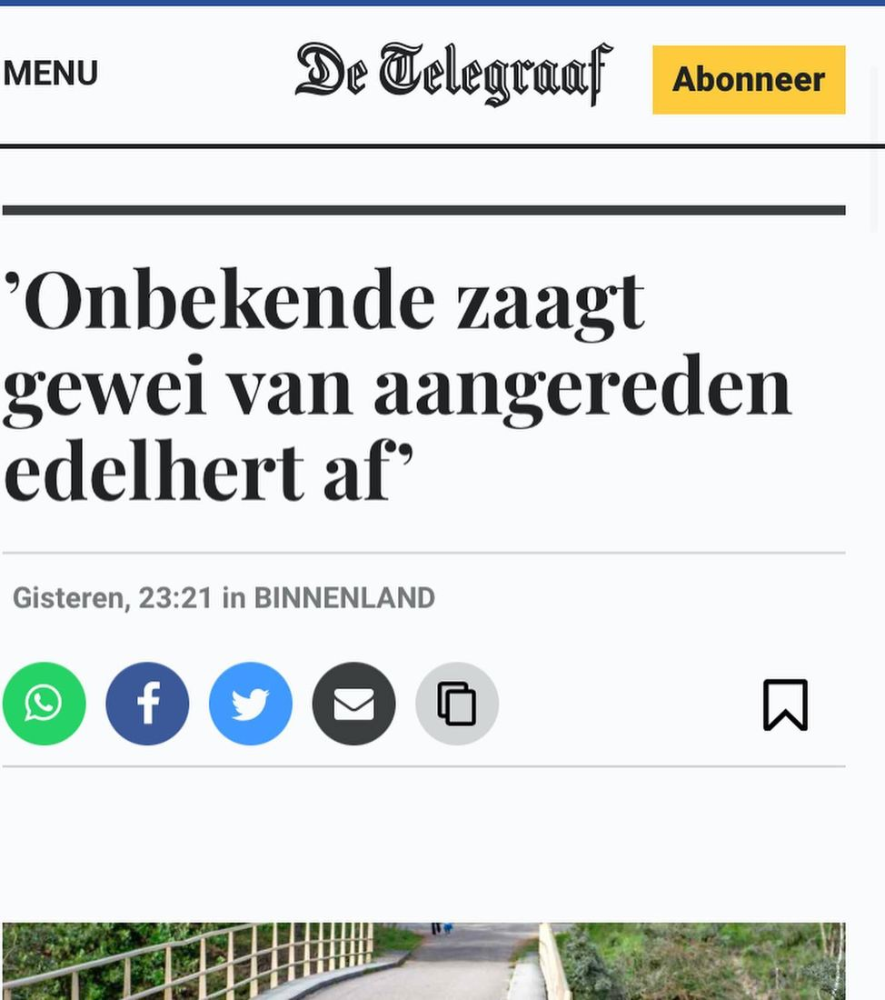
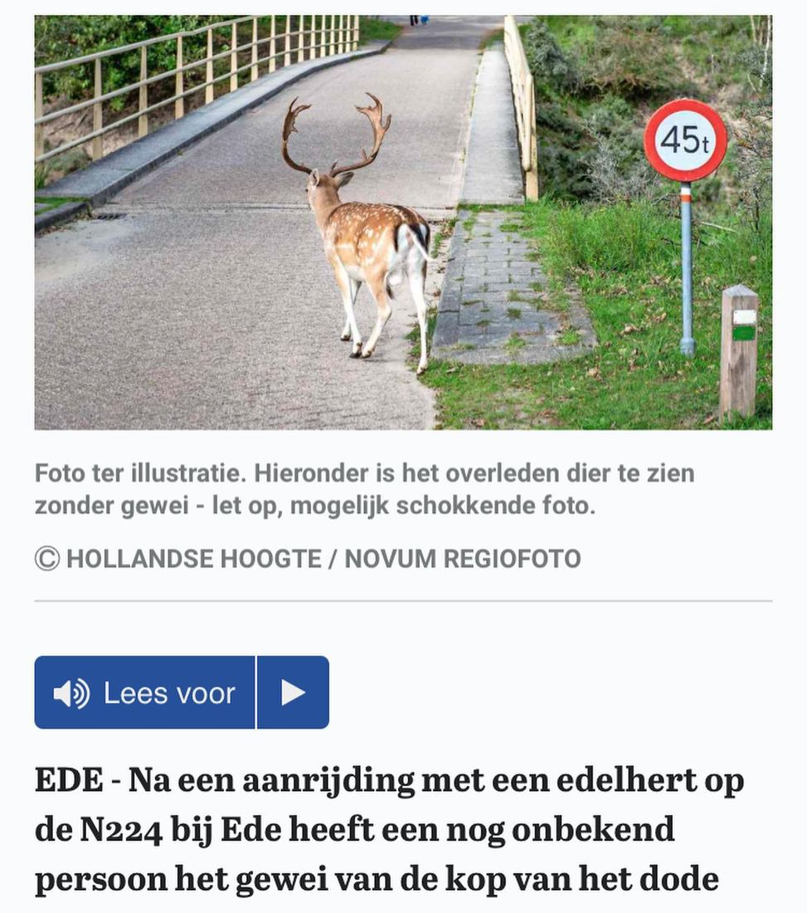

Damhert, geen edelhert
12 november 2020 · De Telegraaf
- Op de foto
- Damhert
- Het ging over
- Edelhert


Goedemorgen. De @telegraaf.nl was gisteravond niet meer zo wakker. ‘Ter illustratie’ hebben ze er maar een foto van een Damhert bij gezet.
Met dank aan @jesse__zwart voor het insturen!